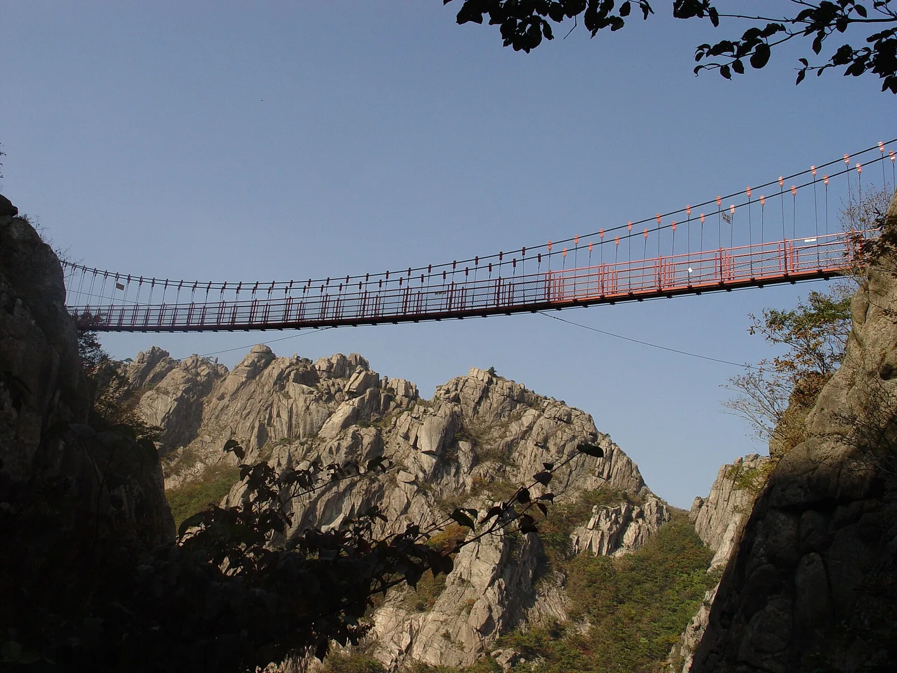
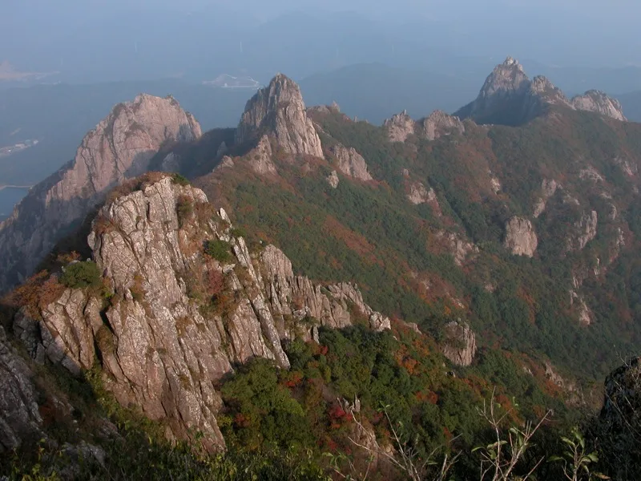
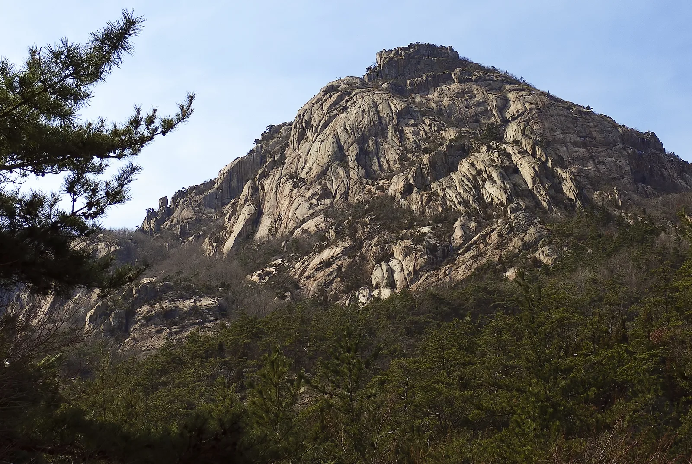
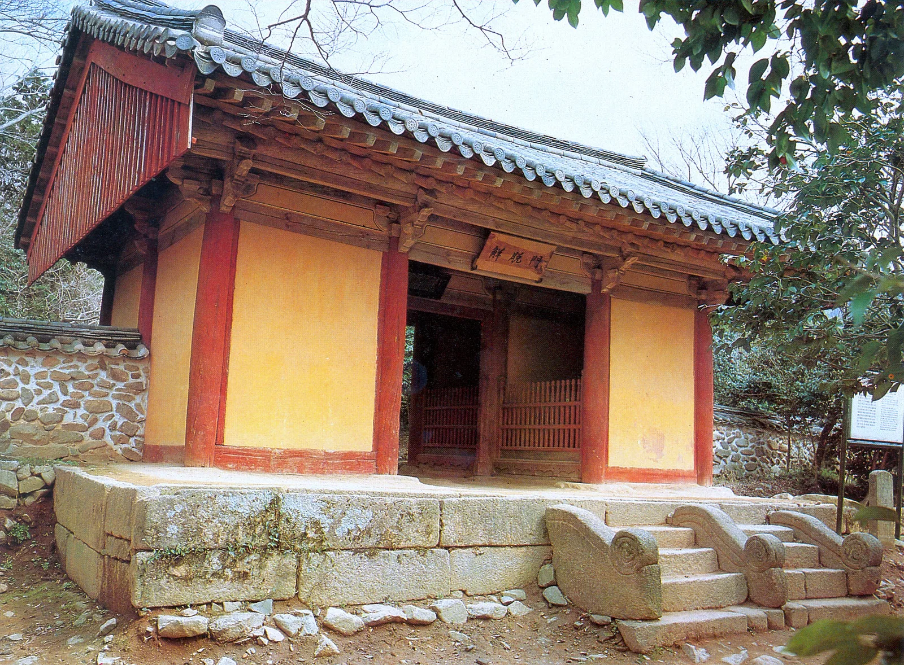
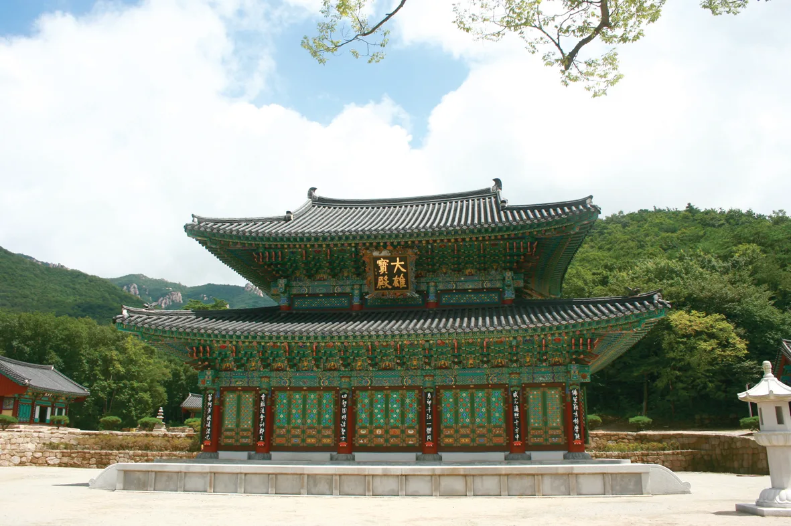
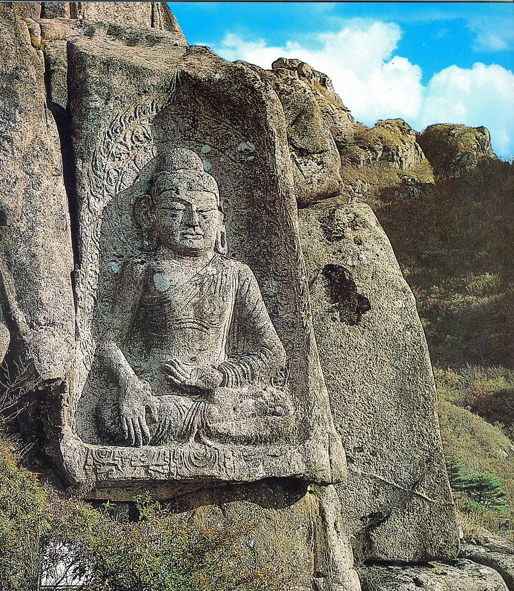
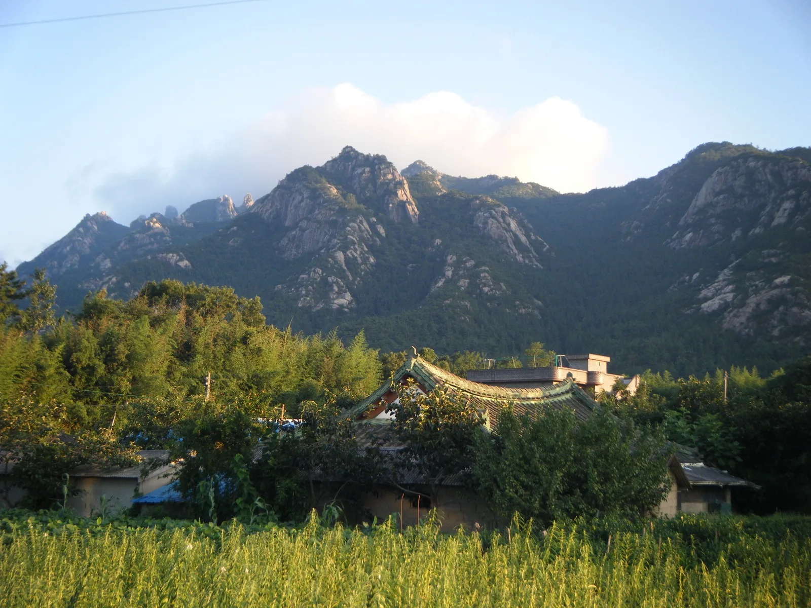

▲ 월출산 구름다리는 매봉과 사자봉 사이 해발 510m 지점, 기암절벽 사이 협곡을 가로지른다 ⓒ Wikimedia Commons
전남 영암과 강진에 걸친 월출산은 '남도의 소금강'으로 불리는 기암괴석 봉우리들이 화강암 능선을 따라 병풍처럼 늘어선 산이다. 1988년 국내 20번째 국립공원으로 지정됐으며, 면적은 56.22㎢로 국립공원 가운데는 작은 편이지만 봉우리 하나하나가 날카롭게 솟아 있어 어느 능선에서 봐도 풍경이 압도적이다. 9월 중순 현재는 늦더위가 남아 있지만, 예년 기준으로 10월 말~11월 초 단풍이 절정에 이르면 회색 암봉과 붉은 단풍이 겹치는 특유의 대비가 절경을 이룬다.
1. 구름다리 — 국내 최초 산악 현수교, 해발 510m 협곡을 가로지르다
월출산 구름다리는 매봉과 사자봉 사이 해발 510m 지점, 지상고 120m에 이르는 협곡을 가로지르는 길이 54m, 폭 1m의 산악 현수교다. 1978년 국내 최초의 산악 현수교로 설치된 뒤 노후화로 2004년 철거됐고, 재가설 공사를 거쳐 2006년 5월 지금의 스테인리스 강선 구조로 다시 개통했다. 다리 위에 서면 발아래로 날카로운 화강암 봉우리들이 첩첩이 펼쳐지고, 흔들림이 있는 만큼 스릴과 전망을 동시에 즐길 수 있어 월출산을 대표하는 포토 스폿으로 꼽힌다.

▲ 협곡 아래에서 올려다본 구름다리. 다리를 건너면 통천문을 지나 천황봉 정상 방향으로 능선길이 이어진다 ⓒ Wikimedia Commons
구름다리는 천황사지구 매표소에서 출발해 바람폭포를 거쳐 오르는 코스에서 만날 수 있다. 편도 약 2km, 1시간 30분 안팎이 걸려 가볍게 다녀오기에도 무리가 없고, 여기서 발길을 돌리지 않고 통천문을 지나 천황봉까지 이어가는 종주 코스도 인기가 많다.
2. 천황봉 — 해발 809m, 월출산 최고봉에서 보는 다도해 조망

▲ 월출산 최고봉 천황봉(해발 809m) 일대. 맑은 날에는 정상에서 남쪽으로 다도해 섬들까지 조망된다 ⓒ Wikimedia Commons
천황봉은 해발 809m로 월출산에서 가장 높은 봉우리다. 구름다리를 지나 통천문 급경사 계단을 오르면 정상에 닿는데, 날씨가 맑으면 북쪽으로는 영암 들판이, 남쪽으로는 강진만과 다도해 섬들까지 시야에 들어온다. 천황사지구에서 구름다리를 거쳐 천황봉까지 오르는 코스는 편도 약 3.7km로 왕복 4~5시간이 소요돼 당일 산행으로 적당하다.

▲ 월출산 특유의 화강암 첨봉 지형. 크고 작은 바위 봉우리가 능선을 따라 촘촘히 이어진다 ⓒ Wikimedia Commons
반대편 도갑사 방향에서는 미왕재 억새 능선을 지나 구정봉으로 오르는 코스도 있다. 억새가 은빛으로 물드는 가을철에는 이 코스도 별도로 찾는 탐방객이 많다.
| 코스 | 구간 | 거리(편도) | 소요시간(왕복) | 난이도 |
|---|---|---|---|---|
| 천황사지구 코스 | 천황사매표소 - 바람폭포 - 구름다리 - 통천문 - 천황봉 | 약 3.7km | 4~5시간 | 중~상 |
| 도갑사 코스 | 도갑사 - 미왕재 - 구정봉 - 천황봉 방면 | 약 4.8km | 5~6시간 | 상 |
| 구름다리 단축 코스 | 천황사매표소 - 바람폭포 - 구름다리(왕복) | 약 2km | 2~3시간 | 중 |
천황사지구 매표소 주차장에서 대한민국 구석구석 탐방 정보와 실시간 개방 현황을 확인할 수 있다.
3. 도갑사 — 국보 해탈문과 마애여래좌상을 품은 천년 고찰

▲ 도갑사 해탈문. 조선 성종 4년(1473년) 중건된 것으로 전해지며 국보 제50호로 지정돼 있다 ⓒ Wikimedia Commons
월출산 서쪽 자락의 도갑사는 신라 말 도선국사가 창건한 것으로 전해지는 고찰로, 대한불교조계종 제22교구 본사 대흥사의 말사다. 입구에 있는 해탈문은 국보 제50호로, 조선 전기 다포계 맞배지붕 건축의 대표 사례로 꼽힌다. 경내 대웅보전을 비롯한 전각들도 가을 단풍과 함께 고즈넉한 분위기를 자아낸다.

▲ 도갑사 대웅보전. 경내에는 오층석탑, 도선국사·수미선사비 등 문화재가 함께 자리한다 ⓒ Wikimedia Commons
도갑사에서 산길로 오르면 용암사지 마애여래좌상을 만날 수 있다. 거대한 바위면에 새겨진 이 불상은 국보 제144호로, 통일신라 말기 제작된 것으로 추정된다.

▲ 용암사지 마애여래좌상(국보 제144호). 자연 암반을 그대로 살려 조각한 고려시대 불상이다 ⓒ Wikimedia Commons
2023년 5월부터 국가지정문화재 관람료 폐지 정책이 시행되면서 도갑사를 비롯한 전국 대다수 사찰의 문화재구역 관람료도 무료로 전환됐다. 국립공원 입장료 역시 2007년 이후 전 구간 무료다.
4. 교통·주차·개방시간 정보

▲ 영암 들녘에서 바라본 월출산 원경. 평지에서 갑자기 솟아오른 암봉 지형이 한눈에 들어온다 ⓒ Wikimedia Commons
| 항목 | 내용 |
|---|---|
| 국립공원 지정 | 1988년 6월(20번째 국립공원) |
| 면적 | 약 56.22㎢(영암군·강진군) |
| 최고봉 | 천황봉 809m |
| 주요 탐방기점 | 천황사지구(영암), 도갑사지구(영암), 금릉경포대지구(강진) |
| 입장료 | 무료(2007년부터 국립공원 입장료 전면 폐지) |
| 탐방로 개방시간 | 일출~일몰 기준, 계절별로 상이(국립공원공단 홈페이지에서 사전 확인 권장) |
| 주차 | 천황사지구·도갑사지구 공영주차장 이용, 단풍철 주말은 혼잡 |
천황사지구는 영암 시내에서 차량으로 약 10분 거리이며, 도갑사지구는 강진 방면에서 접근하기 편리하다. 단풍철 주말에는 두 지구 모두 오전 일찍 도착하는 편이 주차와 탐방 모두에 유리하다.
5. 월출산 구름다리·천황봉·도갑사, 가기 전 체크리스트
✅ 월출산 가기 전 체크리스트
· 1988년 국내 20번째 국립공원 지정, 면적 56.22㎢, 최고봉 천황봉 809m
· 구름다리는 매봉~사자봉 해발 510m 지점, 길이 54m·폭 1m의 국내 최초 산악 현수교
· 천황사지구 매표소~구름다리~천황봉 코스는 편도 약 3.7km, 왕복 4~5시간
· 도갑사 해탈문은 국보 제50호, 용암사지 마애여래좌상은 국보 제144호
· 국립공원 입장료는 전면 무료, 2023년 5월부터 사찰 문화재 관람료도 무료 전환
· 단풍 절정은 예년 기준 10월 말~11월 초, 주말은 이른 시간 방문 권장
· 천황사지구·도갑사지구 각각 공영주차장 이용 가능